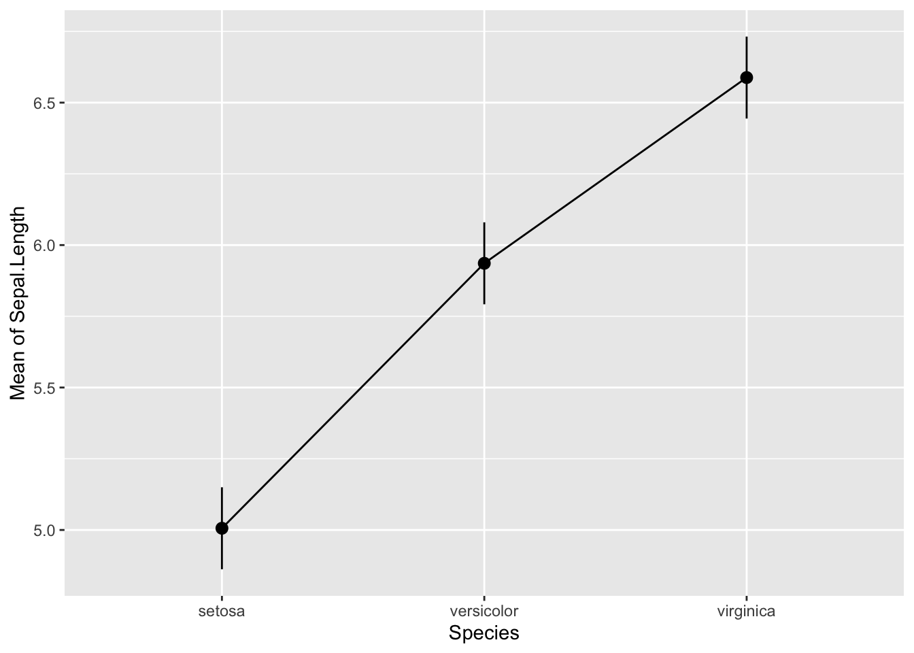
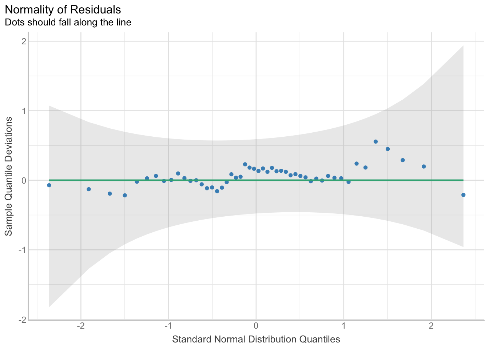
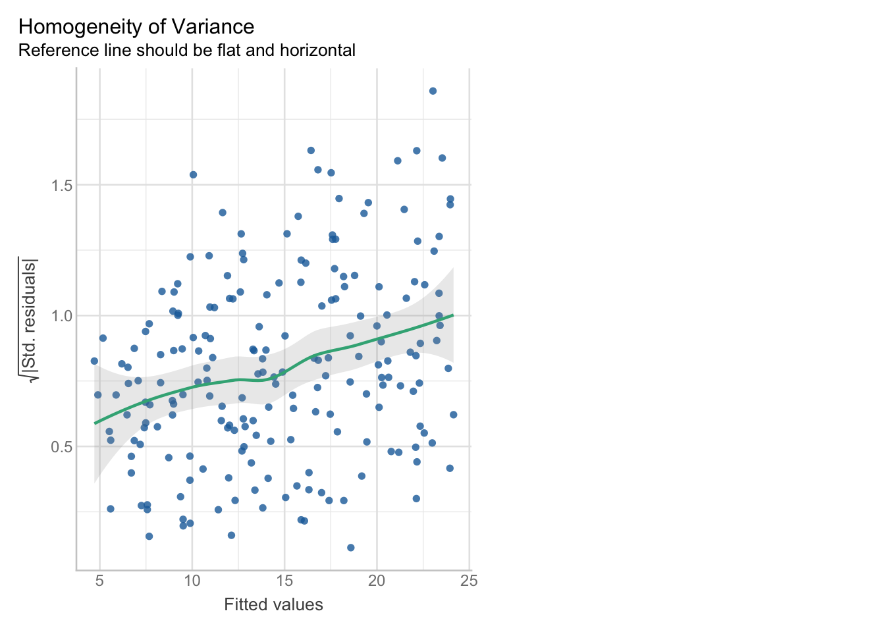

library(tidyverse)
library(modelbased)
library(performance)
iris <- irisCC1
Hints
- You have 60 minutes to solve the following questions.
- Write your answers below the questions if they are text or insert your code in the R chunk.
- When you are done, save and download the document and send it to x@y.z.
- You only need to write R code when I ask you to replace the
____. - Only in the bonus question 2, you have to write R code completely on your own.
- You can earn extra points by answering the bonus question
- There are xx points in total. Plan your time accordingly.
Important: Run this R chunk before you start to set up the correct packages and data:
Question 1
1 point
In the TP, we often used the penguins data set. Is the dataset itself (i.e. penguins) an R object or an R function?
Question 2
1 point
We used mean() to calculate the mean, e.g. of a column. Is mean() an R function, or an R object?
Question 3
2 points
Make a plot with ggplot(): Take the iris data set and plot the the column with the name Sepal.Length on the x-axis and Sepal.Width on the y axis. Use different colours for the different species Species. You can have a look at the data set in the environment tab. Only change the ___!
ggplot(data = ___, aes(x = ___, y = ___, colour = ___)) +
geom_point() +
theme_light() +
labs(x = "Sepal Length (mm)", y = "Sepal Width (mm)") +
theme(legend.position = "bottom")Question 4
6 points
Consider the following model and output:
m_iris <- lm(Sepal.Length ~ Species, data = iris)
anova(m_iris)Analysis of Variance Table
Response: Sepal.Length
Df Sum Sq Mean Sq F value Pr(>F)
Species 2 63.212 31.606 119.26 < 2.2e-16 ***
Residuals 147 38.956 0.265
---
Signif. codes: 0 '***' 0.001 '**' 0.01 '*' 0.05 '.' 0.1 ' ' 1A
1 point
What is the response variable (the variable you want to predict)?
B
1 point
What is the explanatory variable (the variable you use to predict the response variable)?
C
1 point
Have a look at the anova() output. Does the sepal length differ statistically significantly between the different species?
D
2 points
Do a posthoc test:
estimate_contrasts(model = m_iris, p_adjust = "tukey")We selected `contrast=c("Species")`.Marginal Contrasts Analysis
Level1 | Level2 | Difference | SE | 95% CI | t(147) | p
----------------------------------------------------------------------------
versicolor | setosa | 0.93 | 0.10 | [0.73, 1.13] | 9.03 | < .001
virginica | setosa | 1.58 | 0.10 | [1.38, 1.79] | 15.37 | < .001
virginica | versicolor | 0.65 | 0.10 | [0.45, 0.86] | 6.33 | < .001
Variable predicted: Sepal.Length
Predictors contrasted: Species
p-value adjustment method: Tukeyand plot the means and CIs estimated by the model:
estimate_means(model = m_iris) %>%
plot()We selected `by=c("Species")`.
Which groups differ statistically significantly from each other?
E
1 point
When you do many tests on the same data, like these post-hoc tests, why do you need to adjust the p-values?
Question 5
4 points
Now, consider this model for only one species:
# filter data
iris_setosa <- iris %>%
filter(Species == "setosa")
m_iris_setosa <- lm(Sepal.Length ~ Sepal.Width, data = iris_setosa)
summary(m_iris_setosa)
Call:
lm(formula = Sepal.Length ~ Sepal.Width, data = iris_setosa)
Residuals:
Min 1Q Median 3Q Max
-0.52476 -0.16286 0.02166 0.13833 0.44428
Coefficients:
Estimate Std. Error t value Pr(>|t|)
(Intercept) 2.6390 0.3100 8.513 3.74e-11 ***
Sepal.Width 0.6905 0.0899 7.681 6.71e-10 ***
---
Signif. codes: 0 '***' 0.001 '**' 0.01 '*' 0.05 '.' 0.1 ' ' 1
Residual standard error: 0.2385 on 48 degrees of freedom
Multiple R-squared: 0.5514, Adjusted R-squared: 0.542
F-statistic: 58.99 on 1 and 48 DF, p-value: 6.71e-10A
1 point
Is there a positive or negative relationship between Sepal.Length and Sepal.Width?
B
1 point
is this relationship statistically significant, and why?
C
2 points
How much of the variance in the data is explained by the model (in this case, by Sepal.Width)? Give the value in percent.
Question 6
What are the three main assumptions of linear models (1 point)?
Explain each briefly in 1 - 2 sentences (3 points).
Question 7
2 points
Have a look at this QQ-plot.
check_normality(m_iris_setosa) %>%
plot()
Reminder: The Q-Q plot (Quantile-Quantile plot) checks if the residuals follow a normal distribution. If the points align closely along the green line, the normality assumption is satisfied. Deviations from the line, especially at the ends (tails), indicate departures from normality. Small deviations are generally acceptable (within the grey band).
Do you think that the residuals are normally distributed? Explain why.
Question 8
2 points
Have a look at this plot that is part of the check_model() output to assess homoscedasticity.
check_model(m_var, check = "homogeneity")
Reminder: This plot shows the residuals (difference between raw values and modelled values) versus fitted (modelled) values. If the spread stays about the same across the x‑axis, variance is constant (good). If the spread widens, narrows (a funnel), or increases, the variance is not constant.
Is the variance equal along the explanatory variable (1 point)? Why would this impact a linear model (1 point)?
Question 9
2 points
Have a look at this sampling design. Do you think that all samples are independent of each other or is there a structure (1 point)?
Why is this important for linear models (1 point)?
Question 10
2 points
In the last lesson, you heard about alternative distributions to the normal distribution.
Imagine you counted fish abundance at different sites (in the range of 20 fish per site). Would you use a normal distribution if you want to model the abundance per site? Explain (2 points)!
Bonus 1
1 point on top
If you would not use a normal distribution, which one would you use instead and why?
Bonus Question 2
2 points on top
Task: Choose one of the models we created above (m_iris or m_iris_setosa) and perform a complete model assessment. Write your own R code to check all three assumptions (independence, homoscedasticity, and normality). Interpret each plot briefly.
Hint: Use the check_model() function or individual check_ functions from the performance package. You can use plot() to visualize the results.